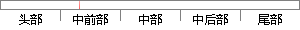

③ 浏览二手物品商城：可以在商城中浏览自己或其他用户发布的二手物品。
片段位置图

相似结果|
相似片段 1：。按照结构化方法。二手物品交易平台可划分为以下几个功能模块：发布信息功能模块主要是为已注册用户的服务．登陆的用户可以即时发布自己的二手商品信息．供大家浏览。这是本系统的主要功能。信息管理功能模块是帮助
|
※ 片段修改建议 ※
近似词参考：- 浏览：阅读 欣赏 涉猎
- 浏览：阅读 欣赏 涉猎
- 自己：本身
- 发布：公布
系统自动生成语句：③ 阅读二手物品商城：可以在商城中阅读本身或其他用户公布的二手物品。
注：本片段修改建议为系统自动生成，仅供参考。